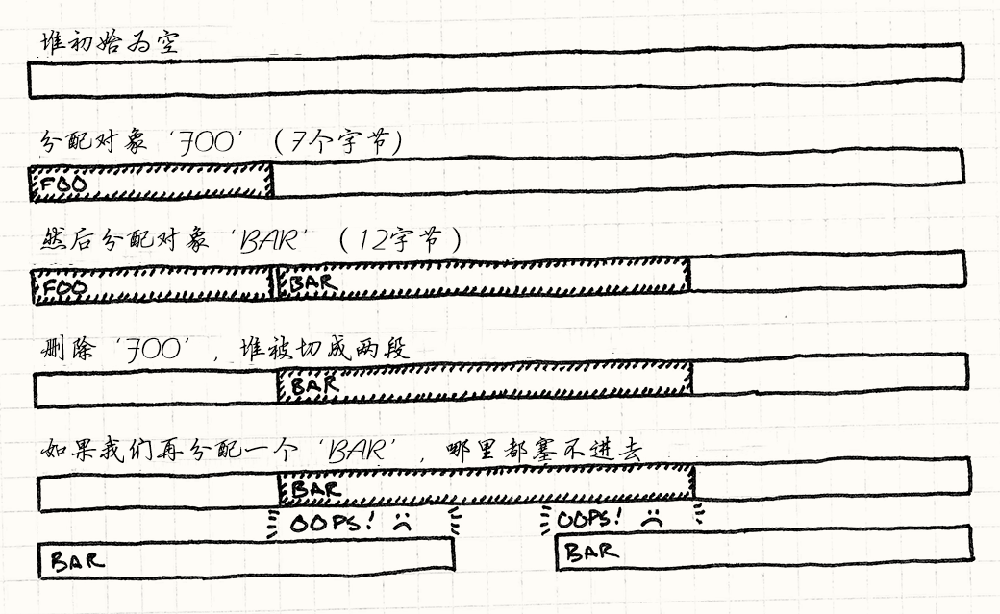

Object Pool
Game Programming PatternsOptimization Patterns
意图
放弃独立的分配和释放对象，从固定的池子中重用对象，以提高性能和内存使用
动机
我们在处理游戏的视觉效果。 当英雄发射了法术，我们想要在屏幕上爆发闪光。 这需要调用粒子系统，由引擎产生的动态闪烁图形，一直显示它们的动画直到不再出现。
由于一次简单的魔杖挥舞就能产生成百上千的粒子，我们的系统需要能够快速制造他们。 更重要的是，我们需要保证制造和销毁这些粒子不会造成内存碎片。
碎片的诅咒
为游戏主机或者移动设备编程在许多方面比为普通的计算机编程更像嵌入式编程。 内存紧张，玩家希望游戏如岩石般稳定，有效压缩内存的管理器很难有效。 在这种环境下，内存碎片是致命的。
碎片意味着在堆中的空余空间被打碎成了很多内存的小碎片，而不是大的整块。 总共的可用内存也许很大，但是最大的连续空间可能难以忍受的小。 假设我们有十四个空余字节，但是被一块正在使用的内存分割成了两个七字节的碎片。 如果我们尝试分配十二字节的对象，就会失败。屏幕上不会有更多生气。

哪怕碎片不频繁，它也仍会逐渐把堆变成了有空洞和裂隙的不可用泡沫，最终完全无法运行游戏。
两个世界中最好的部分
由于碎片和可能很慢的分配，游戏通常非常小心何时何处管理内存。 简单的方法是最好的——游戏开始时取一大块内存，然后直到游戏结束才去释放它。 但是这对于需要在游戏运行时创建和销毁事物的系统是痛苦的。
一个对象池给了我们两个世界中最好的部分。 对于内存管理，我们只需要将一大块内存分出来，然后在游戏运行时不释放。 对于池的用户，我们可以简单的构建析构我们心中内容的对象。
模式
定义一个包含了一组可重用对象的池对象。 每个对象支持“在使用中”查询来说明是不是“在使用”。 池被初始化时，它就创建了整个对象集合（通常在一次连续的分配中），然后初始化所有对象到“不在使用中”状态。
当你需要新对象，向池子要一个。 它找到一个可用对象，初始化为“使用中”，然后返回它。 当对象不再被需要，它被设置回“不在使用中”。 这种方式，对象可以轻易的创建和销毁，而不必分配内存或其他资源。
何时使用
这个模式在可见事物上，比如游戏实体和视觉效果，广泛使用，但是它也可在不那么视觉化的数据结构上使用，比如正在播放的声音。在以下情况中使用对象池：
-
你需要频繁创建和销毁对象。
-
对象大小相仿。
-
在堆上分配对象缓慢或者会导致内存碎片。
-
每个对象都封装了像数据库或者网络连接这样很昂贵又可以重用的资源。
记住
你通常依赖垃圾回收机制或者new和delete来为你处理内存管理。
通过使用对象池，你是在说，“我知道如何更好处理这些字节。”
这就意味着处理这个模式局限的责任在你了。
池可能在不需要的对象上浪费内存
对象池的大小需要为游戏的需求设置。 当池子太小时，调整是很明显的（没有什么比崩溃更能获得你的注意力）。 但是小心池子没有太大。更小的池子缓解了可以做其他有趣事情的内存的压力。
同时只能激活固定数量的对象
在某种程度上，这是好事。 将内存为不同的对象类型分配分离的池子保证了这点。 举个例子，一连串爆炸不会让粒子系统消耗所有可用内存，避免阻碍像创建新的敌人这样的关键事件。
尽管如此，这也意味着试图从池子重用对象可能会失败，因为都在使用中。 这里有几个常用策略来处理：
-
完全阻止这点。这是通常的“修复”：增长对象池的大小，这样无论用户做什么，它们都不会溢出。对于重要对象，比如敌人或游戏道具，这通常是正确的选择。这也许没有“正确的”方法来处理玩家抵达关底时创建巨大Boss内存不足问题，所以最聪明的办法就是保证这个不发生。
这个的反面是强迫你为那些只在一两个危险边缘需要的对象分配过多的内存。由于这个，固定大小的内存池也许不对所有的游戏状态都适用。举个例子，某些关卡也许需要更多的效果而其他的需要声音。在这种情况下，思考为每个场景调整对象池大小。
-
就不要创建对象了。这听起来很糟，但是对于像我们粒子系统这样的情况很有道理。如果所有的粒子都在使用，那么屏幕已经充满了闪动的图形。用户不会注意到下个爆炸不像现在运行的这个一样令人印象深刻。
-
强制干掉一个已有的对象。思考正在播放声音的内存池，假设你需要播放新声音而池子满了。你不想简单的忽视新声音——用户会注意到魔法剑有时会发出戏剧般的声音，有时顽固的一声不吭。更好的解决方法是找到播放中最轻的声音，然后用新的声音替代之。新的声音会覆盖掉前一个声音。
大体上，如果已有对象的消失要比新对象的出现更不引人察觉，这也许是正确的选择。
-
增加池的大小。如果你的游戏允许你使用一点内存上的灵活性，我们也许会在运行时增加池子的大小或者创建新的溢出池。如果你用这些方式获取内存，考虑在增加的存量不再需要时，池子是否需要缩回原来的大小。
每个对象的内存大小是固定的
多数池将对象存储在一个数组中。 如果你所有的对象都是同样的类型，这很好。 但是，如果你想要将不同的对象存储在相同的池中，你需要保证池中的每个位置对最大的可能对象都有足够的内存。 否则，超过预期大小对象会踩到下一个的位置，然后破坏内存。
同时，如果你的对象大小是变化的，你在浪费内存。 每个槽都需要能存储最大的对象。 如果对象很少那么大，你每放进去一个小对象就是在浪费内存。 这很像是通过机场安检时，使用最大允许尺寸的托盘，里面只放了你的钥匙和钱包。
当你发现在用这种方式浪费内存，思考将池为不同大小的对象分割为分离的池子——大的托盘给大行李，小的托盘给口袋里的东西。
重用对象不会自动清除。
很多内存管理系统有debug特性会清除或释放所有内存成特定的值比如0xdeadbeef。
这帮助你找到使用未初始化变量或使用已被释放内存造成的痛苦漏洞。
由于对象池重用对象不再经过内存管理系统，我们失去了安全网。 更糟的是，为“新”对象使用的内存之前存储的是同样类型的相同对象。 这当你创建新对象时的未初始化问题就几乎不可能找到了： 那个对象存储的内存已经保存了来自于上个生命周期的几乎完全正确的数据。
由于这一点，特别注意在池里初始化对象的代码，保证它完全地初始化了对象。 甚至很值得加个在对象回收时清空对象槽的debug选项。
未使用的对象会保留在内存中
对象池在支持垃圾回收的系统中很少见，因为内存管理系统通常会为你处理这些碎片。 但是池仍然是避免构建和析构的有用手段，特别是在有更慢CPU和更简陋垃圾回收系统的移动设备上。
如果你用有垃圾回收的对象池系统，注意潜在的冲突。 由于池不会在对象不再使用的时候真正的析构他们，如果它们仍然保留任何对其他对象的引用，也会防止垃圾回收器回收。 为了避免这一点，当池中对象不再使用，清除它对其他对象的所有引用。
示例代码
现实世界的粒子系统通常应用重力，风，摩擦，和其他物理效果。 我们简陋的例子只在直线上特定帧移动粒子，然后销毁粒子。 这不是工业级的品质，但它足够说明如何使用对象池。
我们应该从最简单的可能实现开始。第一是小小的粒子类：
class Particle { public: Particle() : framesLeft_(0) {} void init(double x, double y, double xVel, double yVel, int lifetime) { x_ = x; y_ = y; xVel_ = xVel; yVel_ = yVel; framesLeft_ = lifetime; } void animate() { if (!inUse()) return; framesLeft_--; x_ += xVel_; y_ += yVel_; } bool inUse() const { return framesLeft_ > 0; } private: int framesLeft_; double x_, y_; double xVel_, yVel_; };
默认的构造器将粒子初始化为“不在使用中”。之后对init()的调用初始化了粒子到活跃状态。
粒子随着时间动画，使用意料之中的animate()函数，它一帧被调用一次。
池需要知道哪个粒子可以重用。它通过粒子的inUse()函数获知这点。
这个函数利用了粒子只有有限的生命时间，并使用framesLeft_变量来决定哪些粒子在被使用而无需存储分离的标识。
池类也很简单：
class ParticlePool { public: void create(double x, double y, double xVel, double yVel, int lifetime); void animate() { for (int i = 0; i < POOL_SIZE; i++) { particles_[i].animate(); } } private: static const int POOL_SIZE = 100; Particle particles_[POOL_SIZE]; };
create()函数让其他代码创建新的粒子。
游戏每帧调用animate()一次，让池中粒子轮流显示动画。
粒子本身被存储在类中一个固定大小的数组里。 在这个简单的实现中，池的大小在类声明时被硬编码了，但是也可以使用给定大小的动态数组或使用由外部定义的模板变量。
创建新粒子很直观：
void ParticlePool::create(double x, double y, double xVel, double yVel, int lifetime) { // Find an available particle. for (int i = 0; i < POOL_SIZE; i++) { if (!particles_[i].inUse()) { particles_[i].init(x, y, xVel, yVel, lifetime); return; } } }
我们遍历池来找到第一个可用粒子。 当我们找到后，我们初始化它然后就完成了。 注意在这个实现中，如果这里没有任何可用的粒子，我们就不创建新的。
做一个简单粒子系统的所有东西都在这里了，当然，没有包含渲染粒子。 我们现在可以创建池然后使用它创建粒子。当时间到了，粒子会自动失效。
这足够承载一个游戏，但是敏锐的目光也许会注意到创建新粒子（可能）需要遍历整个集合，直到我们找到一个空闲槽。 如果池子很大很满，这可能很慢。让我们看看我们可以怎样改进这一点。
一个空闲列表
如果我们不想浪费时间在查找空闲粒子上，明星的答案是不要失去对它们的追踪。 我们可以存储分离的指向每个未使用的粒子的指针列表。 然后，当我们需要创建粒子，我们从列表中移除第一个指针，然后重用它指向的粒子。
不幸的是，这回要我们管理一个和池同样大小的分离数组。 无论如何，在我们创建池时，所有的粒子都没有用，所以列表初始会对池中每个对象都有一个指针。
如果能够修复我们的性能问题，无需牺牲任何内存就好了。 方便的是，这里已经有我们可以借走的内存了——那些存储未使用粒子本身的内存。
当粒子没有被使用，它大部分的状态都是无关紧要的。
它的位置和速度没有使用。唯一需要的有没有死亡的状态。
在我们的例子中，那是framesLeft_成员。
所有其他的位都可以被重用。这里是一个改进的粒子：
class Particle { public: // ... Particle* getNext() const { return state_.next; } void setNext(Particle* next) { state_.next = next; } private: int framesLeft_; union { // State when it's in use. struct { double x, y; double xVel, yVel; } live; // State when it's available. Particle* next; } state_; };
我们将除framesLeft_外的所有成员变量移到union中的state_中的live结构。
这个结构在动作时保存粒子的状态。
当粒子被重用时，union的其他部分，next成员被使用了。
它保持了一个指向这个后面的其他可用粒子的指针。
我们可以使用这些指针构建链表，将池中每个未使用粒子都连在一起。 我们有可用的粒子的列表，但是无需使用多余的内存。 我们使用了死亡粒子本身的内存来排列列表。
这种聪明的技术被称为freelist。 为了让其工作，我们需要保证指针正确的初始化，在粒子创建和销毁时好好被管理了。 并且，当然，我们要追踪列表的头：
class ParticlePool { // ... private: Particle* firstAvailable_; };
当池被首次创建，所有的粒子都是可用的，所以空余列表应该穿过整个池。池构造器设置了这些：
ParticlePool::ParticlePool() { // The first one is available. firstAvailable_ = &particles_[0]; // Each particle points to the next. for (int i = 0; i < POOL_SIZE - 1; i++) { particles_[i].setNext(&particles_[i + 1]); } // The last one terminates the list. particles_[POOL_SIZE - 1].setNext(NULL); }
现在为了创建新的粒子，我们直接跳到首个可用的：
void ParticlePool::create(double x, double y, double xVel, double yVel, int lifetime) { // Make sure the pool isn't full. assert(firstAvailable_ != NULL); // Remove it from the available list. Particle* newParticle = firstAvailable_; firstAvailable_ = newParticle->getNext(); newParticle->init(x, y, xVel, yVel, lifetime); }
我们需要知道粒子死亡，这样可将其放回到空闲列表中，所以我们将animate()改为在上一个活跃粒子放弃了这帧存在时返回true：
bool Particle::animate() { if (!inUse()) return false; framesLeft_--; x_ += xVel_; y_ += yVel_; return framesLeft_ == 0; }
当那个发生时，我们简单地将其放回列表：
void ParticlePool::animate() { for (int i = 0; i < POOL_SIZE; i++) { if (particles_[i].animate()) { // Add this particle to the front of the list. particles_[i].setNext(firstAvailable_); firstAvailable_ = &particles_[i]; } } }
这样就成了，一个小对象池，拥有常量时间的构造和删除。
设计决策
如你所见，对象池最简单实现是几乎微不足道的：创建对象数组，在需要它们时重新初始化。 产出的代码很少会那么少，这里还有很多方式让池更加的通用，安全，或容易管理。 在游戏中实现对象池时，你需要回答以下问题：
对象和池耦合吗？
第一个你写对象池需要思考的问题：是否对象本身需要知道它们在池子中。 大多数情况下它们需要，但是你不大可能写一个通用对象池类来保存任意对象。
-
如果对象与池耦合：
-
实现更简单。你可以在对象中简单地放个“在使用中”标识或者函数，就完成了。
-
你可以保证对象只能被池创建。在C++中，做这事最简单的方法是让池对象是对象类的友类，让对象的构造器私有。
class Particle { friend class ParticlePool; private: Particle() : inUse_(false) {} bool inUse_; }; class ParticlePool { Particle pool_[100]; };
在类间保持这种关系来确保你的用户无法创建对象池没有追踪的对象。
-
你也许可以避免显式存储“在使用中”标识。很多对象已经保存了可以告诉外界它有没有在使用的状态。举个例子，一个粒子的位置如果不在屏幕上，也许它就可以被重用。如果对象类知道它会在对象池中，那它可以提供一个
inUse()来查询那个状态。这省下了对象池存储“在使用中”标识的多余内存。
-
-
如果对象没有和池子耦合：
-
可以保存多种类型的对象。这是最大的好处。通过解耦对象和对象池，你可以实现通用的可重用对象池类。
-
“使用中”状态必须在对象的外部追踪。做这点最简单的方式是创建分离的位字段：
template <class TObject> class GenericPool { private: static const int POOL_SIZE = 100; TObject pool_[POOL_SIZE]; bool inUse_[POOL_SIZE]; };
-
谁负责初始化重用对象？
为了重用一个已经存在的对象，它必须用新状态重新初始化。 这里的关键问题是你需要在池类的内部还是外部重新初始化。
-
如果池内部重新初始化：
-
池子可以完全封装它的对象。取决于你对象需要的其他能力，你可以让它们完全处于池子的内部。这保证了其他代码不会有不小心重用了的对象的引用。
-
池子绑定到了对象是如何初始化的。池中对象也许提供不同的函数来初始化。如果池控制了初始化，它的接口需要支持所有的，然后转送给对象。
class Particle { // Multiple ways to initialize. void init(double x, double y); void init(double x, double y, double angle); void init(double x, double y, double xVel, double yVel); }; class ParticlePool { public: void create(double x, double y) { // Forward to Particle... } void create(double x, double y, double angle) { // Forward to Particle... } void create(double x, double y, double xVel, double yVel) { // Forward to Particle... } };
-
-
如果外部代码初始化对象：
-
池子接口更简单。无需提供可以覆盖每种对象初始化的多种函数，池只需要返回新对象的引用：
class Particle { public: // Multiple ways to initialize. void init(double x, double y); void init(double x, double y, double angle); void init(double x, double y, double xVel, double yVel); }; class ParticlePool { public: Particle* create() { // Return reference to available particle... } private: Particle pool_[100]; };
调用者可以在暴露的对象上使用任何方法初始化之：
ParticlePool pool; pool.create()->init(1, 2); pool.create()->init(1, 2, 0.3); pool.create()->init(1, 2, 3.3, 4.4);
-
外部代码需要处理无法创建新对象的失败。前面的例子假设
create()总能成功的返回一个指向对象的指针。但如果池是满的，它会返回NULL。为了安全，你需要在初始化之前检查这一点。Particle* particle = pool.create(); if (particle != NULL) particle->init(1, 2);
-